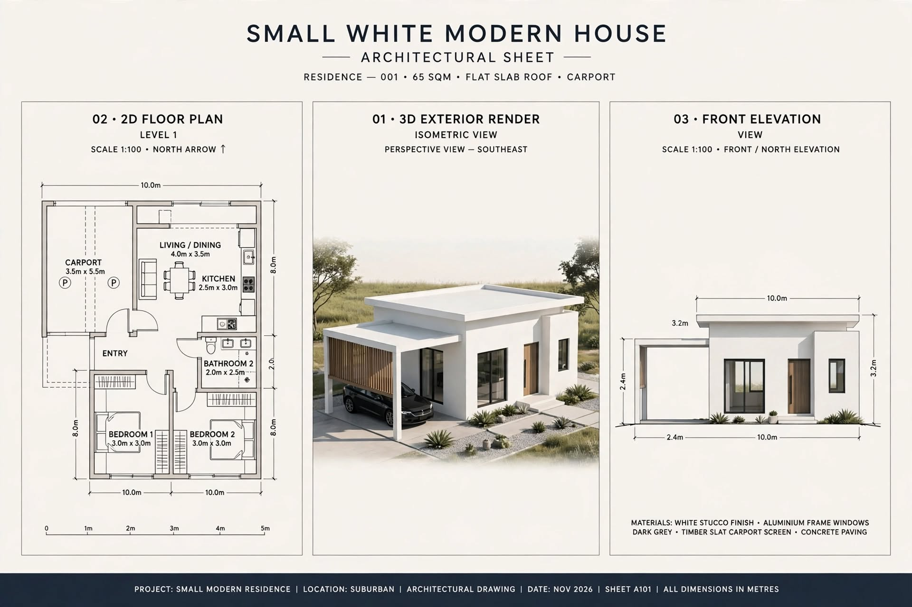

SMALL HOUSE PLANS · ARTICLE 09
Modern Small White House with Carport – 10 m × 8 m Concept
A modern flat-roof house concept with two bedrooms, open living and dining, kitchen and an attached carport.

This guide reviews the supplied image as a design concept. It separates what is visibly stated in the drawing from items that still need professional measurement and confirmation.
1. Modern Design Idea
This board presents a minimalist white house with a flat roof, dark-framed windows, timber-look carport screening and a sheltered entrance. The plan shows a carport on one side, an open living/dining space connected to the kitchen, two bedrooms and a bathroom. The clean exterior form suits a contemporary design brief, but the dimensions need correction before the concept can be developed.
2. Footprint and Carport Review
The drawing gives a main rectangular dimension of 10 m × 8 m, which equals 80 m². The heading separately states 65 m². These figures cannot both describe the same complete rectangle. The carport is labelled 3.5 m × 5.5 m, and the front elevation includes additional depth dimensions. A revised drawing should state the enclosed floor area, covered porch area and carport area separately, and identify which are included in the building footprint.
3. Room Schedule Shown
| Space | Label in drawing | Review |
|---|---|---|
| Bedroom 1 | 3.0 × 3.0 m | Check bed and wardrobe clearances |
| Bedroom 2 | 3.0 × 3.0 m | Check door and window positions |
| Living / dining | 4.0 × 3.5 m | Confirm boundary and connection to kitchen |
| Kitchen | 2.5 × 3.0 m | Plan appliance and counter clearances |
| Bathroom | 2.0 × 2.5 m | Verify fixture arrangement |
| Carport | 3.5 × 5.5 m | Check vehicle size, access and turning space |
4. Open-Plan Living and Kitchen
The open living/dining arrangement can make a compact home feel connected. Use a small dining table, a compact sofa and a clear walking route from the entry to the bedrooms. In the kitchen, plan the sink, cooktop, refrigerator and preparation counter as a functional sequence. Provide suitable extraction for cooking fumes and enough task lighting over work surfaces.
5. Carport and Flat-Roof Exterior
The carport screen can provide partial privacy while allowing air movement. Confirm vehicle length, door-opening space, column positions, driveway gradient and rainwater flow. A flat roof needs designed falls, waterproofing, drainage outlets and overflow routes. The reinforced-concrete structure must be engineered; the render does not specify slab thickness or reinforcement.
Construction, Services and Budget Planning
Before construction, confirm the site boundaries, access, levels, soil conditions and approval requirements. A qualified local professional should prepare the measured architectural and structural drawings. The normal sequence is setting out, foundations, floor and wall construction, roof installation, first-fix plumbing and electrical work, plastering, waterproofing, doors and windows, finishes, testing and final inspection.
Prepare a project-specific bill of quantities rather than relying on a generic online price. Include excavation, concrete, reinforcement, blocks or bricks, roof materials, doors, windows, plumbing, electrical work, waterproofing, flooring, paint, labour, transport, approvals and a contingency. Actual costs in Sri Lanka vary by district, access, soil, specification, supplier and quotation date.
Important Professional Checks
- Verify all external and internal dimensions on a scaled drawing.
- Coordinate door swings, window openings, furniture clearances and circulation.
- Have foundation, columns, beams, lintels and roof structure designed for the site.
- Plan safe electrical circuits, earthing, water supply, drainage and ventilation.
- Check local planning rules, setbacks, approvals and applicable building standards.
Disclaimer: This article explains an illustrative design concept. It is not an architectural, structural, engineering or cost-certified document and must not be used alone for construction.